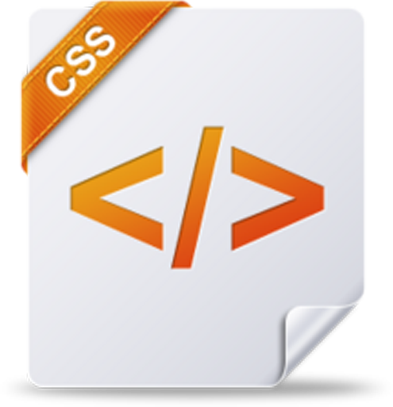
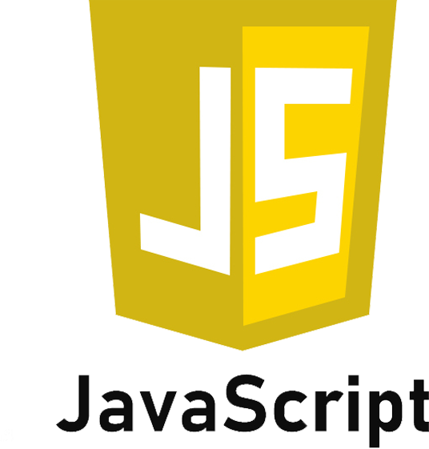

前端开发是创建WEB页面或APP等前端界面呈现给用户的过程， 通过HTML，CSS及JavaScript以及衍生出来的各种技术、框架、解决方案，来实现互联网产品的用户界面交互
 返回首页
返回首页

| Html |  Css |  JavaScript |
|---|---|---|
| HTML的全称为超文本标记语言，是一种标记语言。 它包括一系列标签．通过这些标签可以将网络上的文档格式统一 ，使分散的Internet资源连接为一个逻辑整体。 HTML文本是由HTML命令组成的描述性文本，HTML命令可以说明文字， 图形、动画、声音、表格、链接等。 | 层叠样式表(英文全称：Cascading Style Sheets)是一种用来表现HTML 标准通用标记语言的一个应用）或XML（标准通用标记语言的一个子集） 等文件样式的计算机语言。CSS不仅可以静态地修饰网页， 还可以配合各种脚本语言动态地对网页各元素进行格式化。 | JavaScript（简称“JS”） 是一种具有函数优先的轻量级， 解释型或即时编译型的编程语言。虽然它是作为开发Web页面的脚本语言而出名， 但是它也被用到了很多非浏览器环境中，JavaScript 基于原型编程、 多范式的动态脚本语言，并且支持面向对象、命令式、声明式、函数式编程范式 |